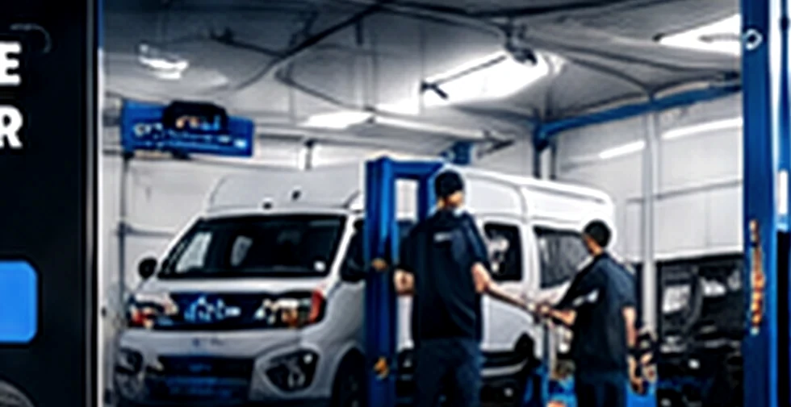

[ PNEU.COM JUNDIAÍ / A OFICINA ]
MECÂNICA COM
PROPÓSITO.
A Pneu.com Jundiaí combina atendimento para linha leve e diesel leve, com compromisso de clareza e responsabilidade.
SOLICITAR ORÇAMENTO[ ESPECIALIDADE / O QUE FAZEMOS ]
MAIS DO QUE CONSERTAR, AJUDAR VOCÊ A SEGUIR.
Acreditamos que um veículo representa pessoas, trabalho e família. Nossa forma de atender prioriza entender o problema, orientar sobre a avaliação e respeitar a decisão de cada cliente.
- 01Atendimento a carros de passeio e SUVs↗
- 02Manutenção de vans, picapes e utilitários↗
- 03Alinhamento e balanceamento↗
- 04Orientação técnica com linguagem simples↗
- 05Orçamento antes da execução↗
SEU CAMINHO.
NOSSO COMPROMISSO.
[ FALE COM A OFICINA ]
PRONTO PARA
SEGUIR EM FRENTE?
Conte sobre seu veículo e envie uma solicitação de orçamento pelo WhatsApp.
[ PERGUNTAS E RESPOSTAS ]
AINDA TEM
DÚVIDAS?
01Vocês atendem vans e picapes a diesel?+
Sim. Nossa atuação contempla manutenção de diesel leve, incluindo vans, picapes e utilitários. Descreva seu veículo no WhatsApp para confirmar o serviço.
02O alinhamento e o balanceamento são a mesma coisa?+
Não. O alinhamento verifica a geometria das rodas e da direção. O balanceamento corrige desequilíbrios no conjunto de rodas e pneus.
03Posso solicitar um orçamento antes de levar o veículo?+
Você pode enviar modelo, ano e sintomas pelo WhatsApp. A equipe orienta sobre a avaliação necessária e a elaboração do orçamento.